2 Credibility, Models, and Parameters
2.1 The Steps of Bayesian Data Analysis
In general, Bayesian analysis of data follows these steps:
Identify the data relevant to the research questions.
What are the measurement scales of the data? Which data variables are to be predicted, and which data variables are supposed to act as predictors?
Define a descriptive model for the relevant data. The mathematical form and its parameters should be meaningful and appropriate to the theoretical purposes of the analysis.
Specify a prior distribution on the parameters. The prior must pass muster with the audience of the analysis, such as skeptical scientists.
Use Bayesian inference to re-allocate credibility across parameter values. Interpret the posterior distribution with respect to theoretically meaningful issues (assuming that the model is a reasonable description of the data; see next step).
Check that the posterior predictions mimic the data with reasonable accuracy (i.e., conduct a “posterior predictive check”). If not, then consider a different descriptive model.
In this chapter we will focus on two examples so we can get an overview of what Bayesian data analysis looks like. In subsequent chapters we will fill in lots of the missing details.
2.1.1 R code
Some of the R code used in this chapter has been hidden, and some of it is visible. In any case the point of this chapter is not to understand the details of the R code. It is there mainly for those of you who are curious, or because you might come back and look at this chapter later in the semester.
For those of you new to R, we will be learning it as we go along. For those of you who have used R before, some of this will be familiar to you, but other things likely will not be familiar.
2.1.2 R packages
We will make use of a number of R packages as we go along. Here is the code used to load the packages used in this chapter. If you try to mimic the code on your own machine, you will need to use these packages.
library(ggformula) # for creating plots
theme_set(theme_bw()) # change the default graphics settings
library(dplyr) # for data wrangling
library(mosaic) # includes the previous 2 (and some other stuff)
library(CalvinBayes) # includes BernGrid()
library(brms) # used to fit the model in the second exmample,
# but hidden from view here2.2 Example 1: Which coin is it?
As first simple illustration of the big ideas of Bayesian inference, let’s consider a situation where we have a coin that is known to result in heads in either 0, 20, 40, 60, 80, or 100% of tosses. But we don’t know which. Our plan is to gather data by flipping the coin and recording the results. If we let \(\theta\) be the true probability of tossing a head, we can refer to these 5 possibilities as \(\theta = 0\), \(\theta = 0.2\), \(\theta = 0.4\), \(\theta = 0.6\), \(\theta = 0.8\), and \(\theta = 1\).
Before collecting our data, if have no other information, we will consider each coin to be equally credible. We could represent that as follows.
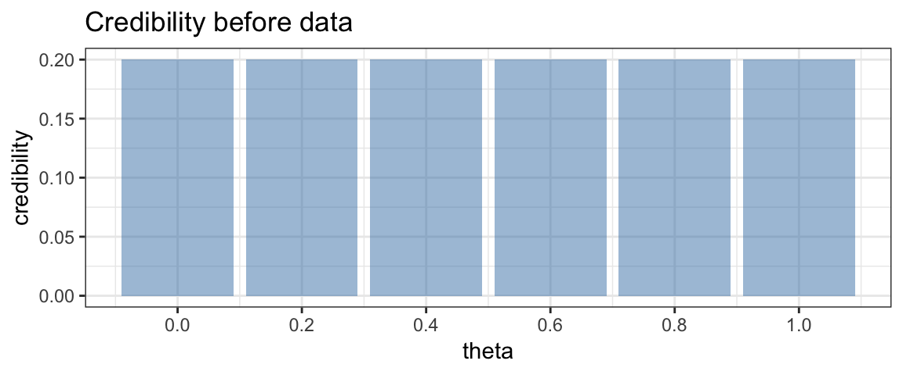
Now suppose we toss the coin and obtain a head. What does that do to our credibilities? Clearly \(\theta = 0\) is no longer possible. So the credibility of that option becomes 0. The other credibilities are adjusted as well. We will see later just how, but the following should be intuitive:
- the options with larger values of \(\theta\) should increase in credibility more than those with lower values of \(\theta\).
- the total credibility of all options should remain 1 (100%).
In fact, the adjusted credibility after one head toss looks like this:
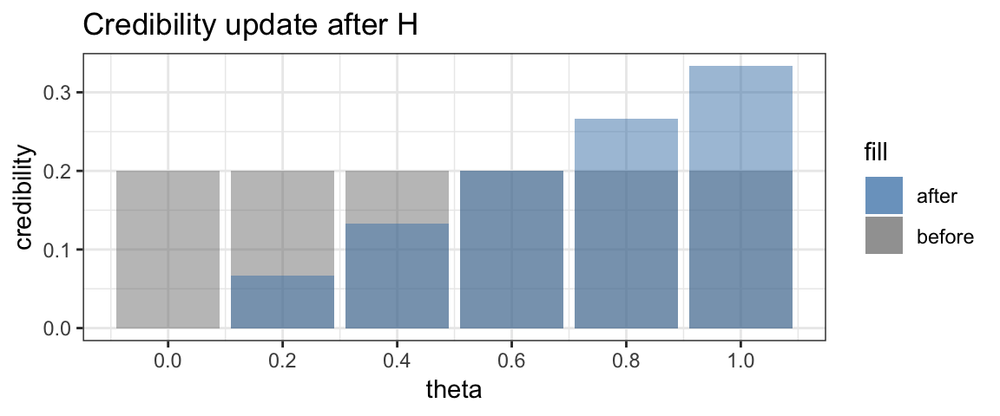
This updating of credibility of possible values of \(\theta\) is the key idea in Bayesian inference. Bayesians don’t call these distributions of credibility “before” and “after”, however. Instead they use the longer words “prior” and “posterior”, which mean the same thing.
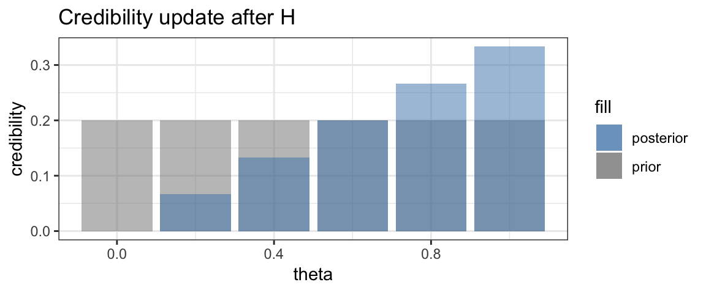
Now suppose we toss the coin again and get another head. Once again we can update the credibility, and once again, the larger values of \(\theta\) will see their credibility increase while the smaller values of \(\theta\) will see their credibility decrease.
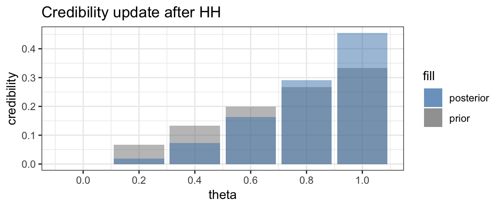
Time for a third toss. This time we obtain a tail. Now the credibility of \(\theta = 1\) drops to 0, and the relative credibilities of the smaller values of \(\theta\) will increase and of the larger values of \(\theta\) will decrease.
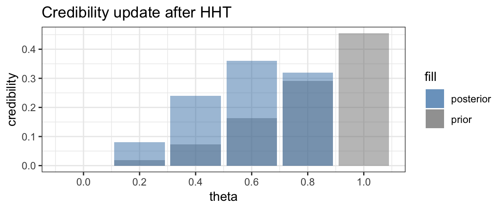 Finally, we flip one more tail.
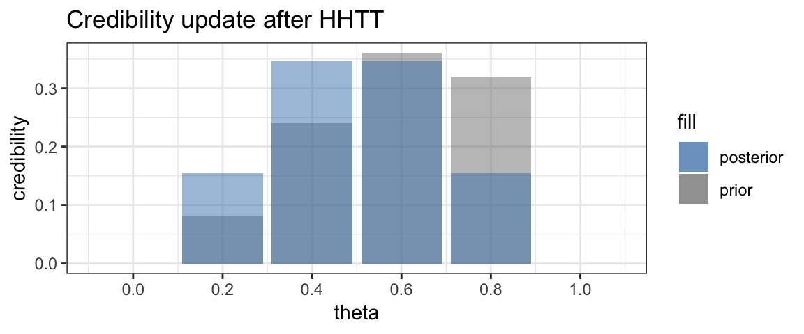
As expected, the posterior is now symmetric with the two central values of \(\theta\) having the larger credibility.
We can keep playing this game as long as we like. Each coin toss provides
a bit more information with which to update the posterior, which becomes our
new prior for subsequent data. The BernGrid() function in the CalvinBayes
package makes it easy to generate plots similar to the ones above. 1
BernGrid("HHTTTHTTT", # the data
steps = TRUE, # show each step
p = c(0, 0.2, 0.4, 0.6, 0.8, 1)) # possible probabilities## Converting data to 1, 1, 0, 0, 0, 1, 0, 0, 0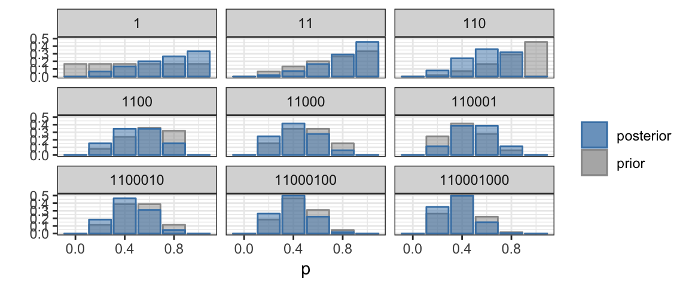
2.2.1 Freedom of choice
In practice, we are usually not given a small number of possible values for the probability (of obtaining heads in our example, but it could be any probability). Instead, the probability could be any value between 0 and 1. But we can do Bayesian updating in essentially the same way. Instead of a bar chart, we will use a line graph (called a density plot) to show how the credibility depends on the parameter value.
BernGrid("HHTTTHTTT", # the data
steps = TRUE) # show each step## Converting data to 1, 1, 0, 0, 0, 1, 0, 0, 0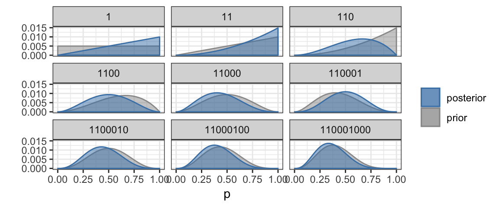
2.3 Distributions
The (prior and posterior) distributions in the previous plots were calculated numerically using a Bayesian update rule that we will soon learn. Density functions have the properties that * they are never negative, and * the total area under the curve is 1. Where the density curve is taller, values are more likely. So in the last posterior credibility above, we see that values near 1/3 are the most credible while values below 0.015 or above 0.065 are not very credible. In particular, we still can’t discount the possibility that we are dealing with a fair coin since 0.5 lies well within the most credible central portion of the plot.
We will also encounter densities with names like “normal”, “beta”, and “t”.
The gf_dist() function from ggformula can be used to plot distributions.
We just need to provide R’s version of the name for the family and any
required parameter values.
2.3.1 Beta distributions
The curves in our coins example above look a lot like beta distributions.
In fact, we will eventually learn that they are beta distributions, and that
each new observed coin toss increases either shape1 or shape2 by 1.
gf_dist("beta", shape1 = 1, shape2 = 1, color = "gray50") %>%
gf_dist("beta", shape1 = 2, shape2 = 1, color = "red") %>%
gf_dist("beta", shape1 = 3, shape2 = 1, color = "orange") %>%
gf_dist("beta", shape1 = 3, shape2 = 2, color = "forestgreen") %>%
gf_dist("beta", shape1 = 3, shape2 = 3, color = "navy")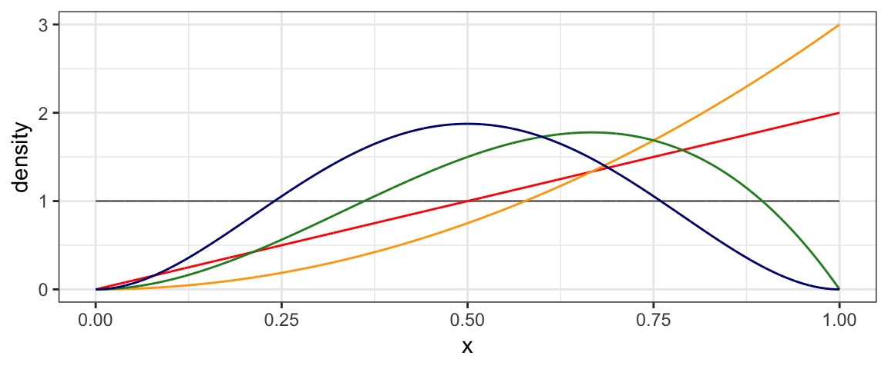
2.3.2 Normal distributions
Another important family of distributions is the normal family. These are bell-shaped, symmetric distributions centered at the mean (\(\mu\)). A second parameter, the standard deviation (\(\sigma\)) quantifies how spread out the distribution is.
To plot a normal distribution with mean 10 and standard deviation 1 or 2, we use
gf_dist("norm", mean = 10, sd = 1, color = "steelblue") %>%
gf_dist("norm", mean = 10, sd = 2, color = "red")
The red curve is “twice as spread out” as the blue one.
We can also draw random samples from distributions. Random samples will not exactly follow the shape of the distribution they were drawn from, so it takes some experience to get calibrated to know when things are “close enough” to consider a proposed distribution to be believable, and when they are “different enough” to be skeptical. Generating some random data and comparing to the theoretical distribution can help us calibrate.
In the example below, we generate 25 random samples of size 100 and compare
their (density) histograms to the theoretical Norm(10, 2) distribution. expand.grid()
produces a data frame with two columns containing every combination of
the numbers 1 through 100 with the numbers 1 through 25, for a total of
2500 rows.
mutate() is used to add a new variable to the data frame.
Rdata <-
expand.grid(
rep = 1:100,
sample = 1:25) %>%
mutate(
x = rnorm(2500, mean = 10, sd = 2)
)
head(Rdata)| rep | sample | x |
|---|---|---|
| 1 | 1 | 11.171 |
| 2 | 1 | 11.419 |
| 3 | 1 | 9.781 |
| 4 | 1 | 9.093 |
| 5 | 1 | 11.212 |
| 6 | 1 | 6.364 |
gf_dhistogram( ~ x | sample, data = Rdata,
color = "gray30", alpha = 0.5) %>%
gf_dist("norm", mean = 10, sd = 2, color = "red")
We will see many other uses of these functions. See the next chapter for in introduction to R functions that will be useful.
2.4 Example 2: Height vs Weight
The coins example above is overly simple compared to typical applications. Before getting to the nuts and bolts of doing Bayesian data analysis, let’s look at a somewhat more realistic example. Suppose we want to model the relationship between weight and height in 40-year-old Americans.
2.4.1 Data
Here’s a scatter plot of some data from the NHANES study that we will use
for this example. (Note: this is not the same data set used in the book.
The data here come from the NHANES::NHANES data set.)

2.4.2 Describing a model for the relationship between height and weight
A plausible model is that weight is linearly related to height. We will make this model a bit more precise by defining the model parameters and distributions involved.
Typically statisticians use Greek letters to represent parameters. This model has three parameters (\(\beta_0\), \(\beta_1\), and \(\sigma\)) and makes two claims
- The average weight of people with height \(x\) is \(\beta_0 + \beta_1 x\) (some linear function of \(x\)). We can express this as
\[ \mu_{Y|x} = E(Y \mid x) = \beta_0 + \beta_1 x \] or \[ \mu_{\mbox{weight}|\mbox{height}} = E(\mbox{weight} \mid \mbox{height}) = \beta_0 + \beta_1 \cdot \mbox{height} \] The \(Y\) and \(x\) notation is useful for general formulas; for specific problems (especially in R code), it is usually better to use descriptive names for the variables. The capital \(Y\) indicates that it has a distribution. \(x\) is lower case because we are imagining a specific value there. So for each value of \(x\), the there is a distribution of \(Y\)’s.
- But not everyone is average. The model used here assumes that the distributions of the heights of people with a given weight are symmetrically distributed around the average weight for that height and that the distribution is normal (bell-shaped). The parameter \(\sigma\) is called the standard deviation and measures the amount of variability. If \(\sigma\) is small, then most people’s weights are very close to the average for their height. If \(\sigma\) is larger, then there is more variability in weights for people who have the same height. We express this as \[\begin{align} y \mid x \sim {\sf Norm}(\mu_{y|x}, \sigma) \end{align}\] Notice the \(\sim\) in this expression. It is read “is distributed as” and describes the distribution (shape) of some quantity.
Putting this all together, and being a little bit sloppy we might write it this way:
\[\begin{align} Y &\sim {\sf Norm}(\mu, \sigma) \\ \mu & \sim \beta_0 + \beta_1 x \end{align}\]
In this style the dependence of \(y\) on \(x\) is implicit (via \(\mu\)’s dependence on \(x\)) and we save writing \(\mid x\) in a few places.
2.4.3 Prior
A prior distribution describes what is known/believed about the parameters before we use the information from our data. This could be informed by previous data, or it may be a fairly uninformative prior that considers many values of the parameter to be credible. For this example, we use very flat broad priors (centered at 0 for the \(\beta\)’s and extending from 0 to a very large number of \(\sigma\). (We know that \(\sigma > 0\), so our prior should reflect that knowledge.)
2.4.4 Posterior
The posterior distribution is calculated by combining the information about the model (via the likelihood function) with the prior. The posterior will provide updated distributions for \(\beta_0\), \(\beta_1\) and \(\sigma\). These distributions will be narrow if our data give a strong evidence about their values and wider if even after considering the data, there is still considerable uncertainty about the parameter values.
For now we won’t worry about how the posterior distribution is computed, but
we can inspect it visually. (It is called Post in the R code below.)
For example, if we are primarily interested in
the slope (how much heavier are people on average for each inch they are taller?),
we can plot the posterior distribution of \(\beta_1\) or calculate its mean,
or the region containing the central 95% of the distribution.
Such a region is called a highest density interval (HDI)
(sometimes called the highest posterior density interval (HPDI), to emphasize
that we are looking at a posterior distribution, but an HDI can be computed for
other distributions as well).
gf_density( ~ b_height, data = Post, alpha = 0.5)
mean(~ b_height, data = Post)## [1] 7.223hdi(Post, pars = "b_height")| par | lo | hi | prob |
|---|---|---|---|
| b_height | 5.551 | 9.045 | 0.95 |
mcmc_areas(as.mcmc(Post), pars = "b_height", prob = 0.95)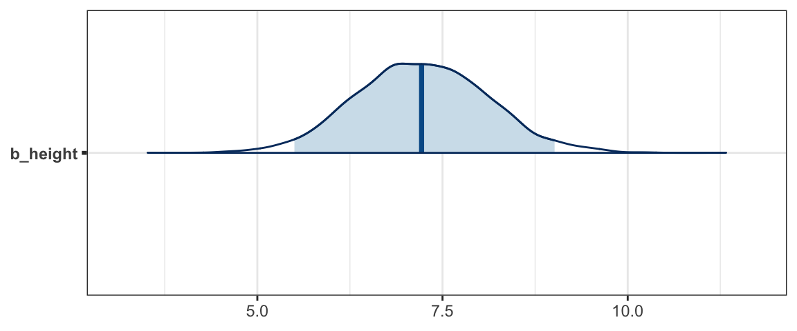
Although we don’t get a very precise estimate of \(\beta_1\) from this model/data combination, we can be quite confident that taller people are indeed heavier (on average), somewhere between 5 and 10 pounds heavier per inch taller.
Another interesting plot shows lines overlaid on the scatter plot. Each line represents a plausible (according to the posterior distribution) combination of slope and intercept. 100 such lines are included in the plot below.


2.4.5 Posterior Predictive Check
Notice that only a few of the dots are covered by the blue lines. That’s because the blue lines represent plausible average weights. But the model takes into account that some people may be quite a bit heavier or lighter than average. A posterior predictive check is a way of checking that the data look like they could have been plausibly generated by our model.
We can generate a simulated weight for a given height by randomly selecting values of \(\beta_0\), \(\beta_1\), \(\sigma\) so that the more credible values are more likely to be selected, and using the normal distribution to generate a difference between an individual weight and the average weight (as determined by the parameters \(\beta_0\) and \(\beta_1\). For example, here are the first two rows of our posterior distribution:
Post %>% head(2)| b_Intercept | b_height | sigma | lp__ |
|---|---|---|---|
| -217.0 | 6.028 | 40.11 | -784.5 |
| -422.1 | 9.030 | 48.28 | -786.5 |
To simulate a weight for a height of 65 inches based on the fist row, we could take a random draw from a \({\sf Norm}(-217 + 6.028 \cdot 65, 40.11)\) distribution. We can do a similar thing for the second row.
Post %>% head(2) %>%
mutate(pred_y = rnorm(2, mean = b_Intercept + b_height * 65, sd = sigma))| b_Intercept | b_height | sigma | lp__ | pred_y |
|---|---|---|---|---|
| -217.0 | 6.028 | 40.11 | -784.5 | 185.3 |
| -422.1 | 9.030 | 48.28 | -786.5 | 219.4 |
Those values are quite different. This is because credible values of \(\sigma\) are quite large – an indication that individuals will vary quite substantially from the average weight for their height.
gf_density( ~ sigma, data = Post)
We should not be surprised to see some (~ 5%) of people who are 85 pounds above or below the average weight for their height.
If we do this many times for several height values and plot the central 95% of the weights, we get a plot that looks like this:
PPC <-
expand.grid(
height = seq(56, 76, by = 1),
rep = 1:nrow(Post)
) %>%
mutate(
b_Intercept = Post$b_Intercept[rep],
b_height = Post$b_height[rep],
sigma = Post$sigma[rep],
weight = b_Intercept + b_height * height + rnorm(n = n(), 0, sigma)
) %>%
group_by(height) %>%
summarise(
mean = mean(weight),
lo = quantile(weight, prob = 0.025),
hi = quantile(weight, prob = 0.975)
)
gf_point(weight ~ height, data = NHANES40, shape = 1) %>%
gf_pointrange(mean + lo + hi ~ height, data = PPC, alpha = 0.7, color = "steelblue")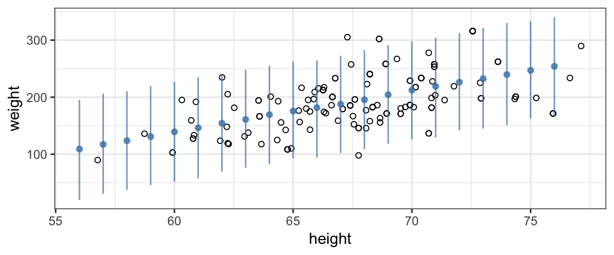
Now we see that indeed, most (but not all) of the data points fall within a range that the model believes is credible. If this were not the case, it would be evidence that our model is not well aligned with the data and might lead us to explore other models.
Notice that by taking many different credible values of the parameters (including \(\sigma\)), we are taking into account both our uncertainty about the parameter values and the variability that the model describes in the population (even for given parameter values).
2.5 Where do we go from here?
Now that we have seen an overview of Bayesian inference at work, you probably have lots of questions. Of time we will improve our answers to each of them.
How do we create models?
One of the nice things about Bayesian inference is that it is so flexible. That allows us to create all sorts of models. We will begin with models of a proportion (and how that proportion might depend on other variables) because these are the simplest to understand. Then we will move on other important examples. (The back half of our book is a smorgasbord of example situations.)
How do we select priors?
We will begin with fairly “uninformative” priors that say very little, and we will experiment with different priors to see what affect the choice of prior has on our analysis. Gradually we will learn more about prior selection.
How do we update the prior based on data to get the posterior?
Here we will learn several approaches, most of them computational. (There are only a limited number of examples where the prior can be computed analytically.) We will start with computational methods that are simple to implement and relatively easy to understand, but are too inefficient to use on large or complex problems. Eventually we will learn how to use two important algorithms (JAGS and Stan) to describe and fit Bayesian models.
How do we tell whether the algorithm that generated the posterior worked well?
The computainal algorithms that compute posterior distributions can fail. No one algorithm works best on every problem, and sometimes we need to describe our model differently to help the computer. We will learn some diagnostics to help us detect when there may be problems with our computations.
What can we do with the posterior once we have it?
After all the work of building a model, selectig a prior, fitting the model to obtain a posterior, and convincing ourselves that no disasters have happened along the way, what can we do with the posterior? We will use it both to diagnose the model itself and to see what the model has to say.
2.6 Exercises
- Consider Figure 2.6 on page 29 of DBDA2E. Two of the data points fall above the vertical bars. Does this mean that the model does not describe the data well? Briefly explain your answer.
Run the following examples in R. Compare the plots produced and comment the big idea(s) illustrated by this comparison.
library(CalvinBayes) BernGrid("H", resolution = 4, prior = triangle::dtriangle) BernGrid("H", resolution = 10, prior = triangle::dtriangle) BernGrid("H", prior = 1, resolution = 100, geom = geom_col) BernGrid("H", resolution = 100, prior = function(p) abs(p - 0.5) > 0.48, geom = geom_col)Run the following examples in R. Compare the plots produced and comment the big idea(s) illustrated by this comparison.
library(CalvinBayes) BernGrid("TTHT", prior = triangle::dtriangle) BernGrid("TTHT", prior = function(x) triangle::dtriangle(x)^0.1) BernGrid("TTHT", prior = function(x) triangle::dtriangle(x)^10)Run the following examples in R. Compare the plots produced and comment the big idea(s) illustrated by this comparison.
library(CalvinBayes) dfoo <- function(p) { 0.02 * dunif(p) + 0.49 * triangle::dtriangle(p, 0.1, 0.2) + 0.49 * triangle::dtriangle(p, 0.8, 0.9) } BernGrid(c(rep(0,13), rep(1,14)), prior = triangle::dtriangle) BernGrid(c(rep(0,13), rep(1,14)), resolution = 1000, prior = dfoo)Run the following examples in R. Compare the plots produced and comment the big idea(s) illustrated by this comparison.
library(CalvinBayes) dfoo <- function(p) { 0.02 * dunif(p) + 0.49 * triangle::dtriangle(p, 0.1, 0.2) + 0.49 * triangle::dtriangle(p, 0.8, 0.9) } BernGrid(c(rep(0, 3), rep(1, 3)), prior = dfoo) BernGrid(c(rep(0, 10), rep(1, 10)), prior = dfoo) BernGrid(c(rep(0, 30), rep(1, 30)), prior = dfoo) BernGrid(c(rep(0, 100), rep(1, 100)), prior = dfoo)Run the following examples in R and compare them to the ones in the previous exercise. What do you observe?
library(CalvinBayes) dfoo <- function(p) { 0.02 * dunif(p) + 0.49 * triangle::dtriangle(p, 0.1, 0.2) + 0.49 * triangle::dtriangle(p, 0.8, 0.9) } BernGrid(c(rep(0, 3), rep(1, 4)), prior = dfoo) BernGrid(c(rep(0, 4), rep(1, 3)), prior = dfoo) BernGrid(c(rep(0, 10), rep(1, 11)), prior = dfoo) BernGrid(c(rep(0, 11), rep(1, 10)), prior = dfoo) BernGrid(c(rep(0, 30), rep(1, 31)), prior = dfoo) BernGrid(c(rep(0, 31), rep(1, 30)), prior = dfoo)
2.7 Footnotes
This is a bit of a trick that R2jags uses. The function created is never run. The code is inspected and taken as the description of the model. If you were to run the funtion, all it would do is create R formulas.↩